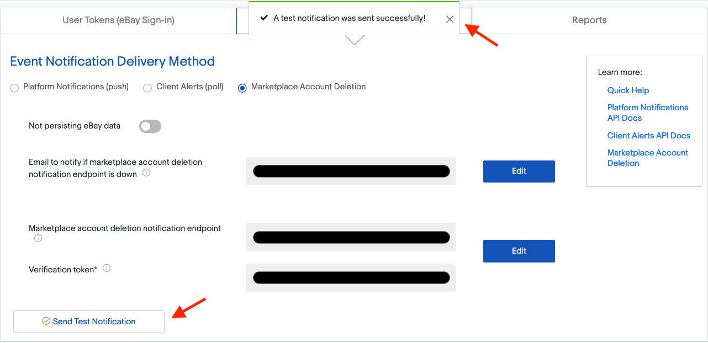

Troubleshooting eBay connector¶
See also
To learn more about the eBay connector visit these pages as well:
Accept account deletion notifications¶
Since September 2021, eBay requires supporting customer account deletion/closure notifications. As such, when eBay receives an account request for deletion, all eBay partners must confirm the reception of the request and take further action if necessary.
Odoo has a notification endpoint to receive those notifications, confirm the reception of the request, and handle the first set of actions to anonymize the account details in Contacts and remove the customer’s access to the portal.
Important
Make sure to correctly set up the subscription to the marketplace account deletion notifications as eBay may temporarily disable the related eBay account until the subscription is completed.
Verify the installation of Odoo is up to date¶
In order to activate the endpoint, the module eBay Connector - Account Deletion must be installed. If the Odoo database was first created after September 2021, the module is installed automatically and the administrator can proceed to the next step.
Update Odoo to the latest release¶
The notification endpoint is made available through a new Odoo module; to be able to install it, the administrator must make sure that the Odoo source code is up-to-date.
If the company uses Odoo on Odoo.com or Odoo.sh platform, the code is already up-to-date, so proceed to the next step.
If the company uses Odoo with an on-premise setup or through a partner, then the administrator must update the installation as detailed in this documentation page or by contacting an integrating partner.
Update the list of available modules¶
New modules must be discovered by the Odoo instance to be available in the menu.
To do so, activate the developer mode, and go to . A wizard will ask for confirmation.
Install the eBay Connector - Account Deletion update¶
Warning
Never install new modules in the production database without testing them in a duplicate or staging environment. For Odoo.com customers, a duplicate database can be created from the database management page. For Odoo.sh users, the administrator should use a staging or duplicate database. For on-premise users, the administrator should use a staging environment - contact the integrating partner for more information regarding how to test a new module in a particular setup.
To install the module, go to the menu, remove the Apps search facet and
search for eBay. If the module eBay Connector - Account Deletion is present and marked as
installed, the Odoo database is already up-to-date and the administrator can proceed with the next
step. If it is not yet installed, install it now.
Retrieve endpoint details from Odoo¶
The endpoint details can be found in . First, input random text values for the Production App Key and for the Production Cert Key. Click on Generate Token to retrieve the Verification Token.

Subscribe to account deletion notifications¶
Navigate to the eBay developer portal. Configure the account
deletion/notification settings in eBay by navigating to the Hi [username] at the top right of
screen, then go to Alerts & Notifications.
To subscribe to deletion/closure notifications, eBay needs a few details:
An email address to send notifications to if the endpoint is unreachable.
The endpoint details:
The URL to Odoo’s account deletion notification endpoint
A verification token
Tip
The administrator can edit the last two fields once the email address field is filled out.
Verify the connectivity with the endpoint¶
After setting the retrieved endpoint details in eBay’s dashboard, consider testing the connectivity with the Send Test Notification button.
The following confirmation message should be received: “A test notification was sent successfully!”